Pada hampir semua aplikasi mobile, form input adalah bagian yang tidak bisa dihindari, misalnya form login, form registrasi, atau form pencatatan transaksi seperti yang dikerjakan pada praktikum ini. Oleh karena itu, penting bagi saya untuk memahami cara menangkap data dari pengguna menggunakan controller, menampilkan pilihan lewat dropdown, serta menerapkan validasi agar data yang masuk ke sistem tidak kosong atau salah format.
Pada praktikum ini, saya membuat halaman AddTransactionScreen yang berisi input Judul Transaksi, Nominal, dan Kategori (dropdown), lengkap dengan validasi pada masing-masing kolom. Selain itu, terdapat pula tugas tambahan untuk menambahkan input Tanggal Transaksi menggunakan fungsi showDatePicker, yang juga dibahas pada laporan ini.
Tujuan yang ingin dicapai dari praktikum ini adalah:
Langkah pertama adalah membuat file baru bernama add_transaction_screen.dart di dalam folder lib/. File ini akan berisi seluruh kode tampilan dan logika form pencatatan transaksi.
Karena isi formulir (teks dan pilihan dropdown) akan terus berubah setiap kali pengguna mengetik atau memilih opsi, maka widget yang digunakan adalah StatefulWidget. Saya menyiapkan sebuah GlobalKey<FormState> untuk mengontrol dan memicu validasi seluruh Form, serta dua buah TextEditingController untuk membaca input Judul Transaksi dan Nominal. Controller yang sudah dibuat juga wajib dibersihkan (dispose) saat halaman ditutup agar tidak terjadi memory leak.
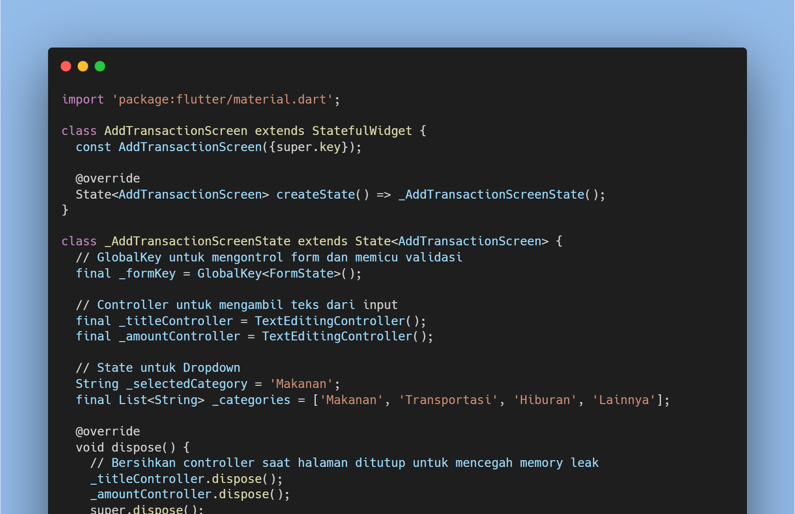
Seluruh kolom input dibungkus dengan widget Form dan dihubungkan dengan _formKey yang sudah disiapkan sebelumnya. Kolom Judul Transaksi divalidasi agar tidak boleh kosong, sedangkan kolom Nominal menggunakan keyboardType: TextInputType.number agar keyboard yang muncul otomatis berupa angka, dan validasinya memastikan nilai tersebut wajib diisi serta harus berupa angka yang valid.
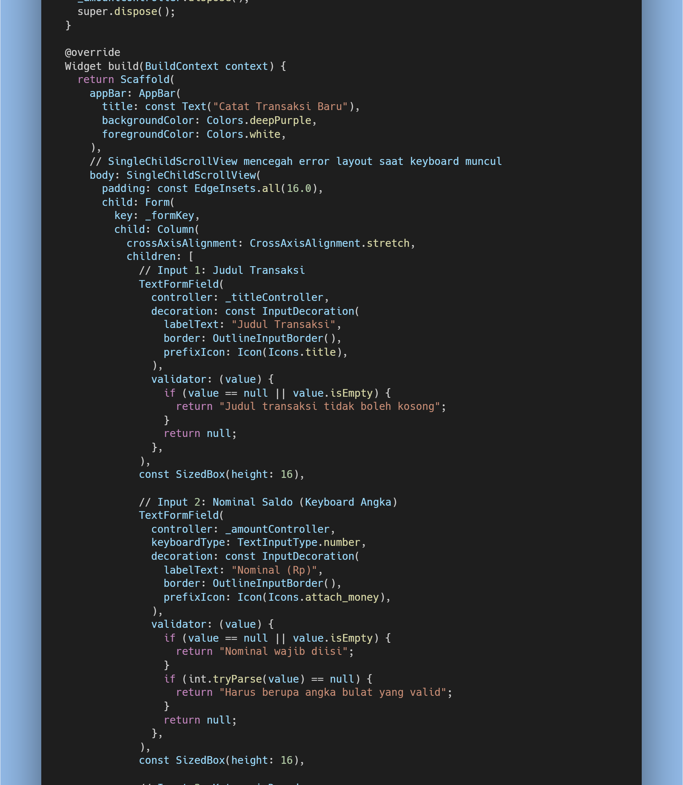
Untuk pilihan kategori transaksi, saya menggunakan DropdownButtonFormField dengan empat opsi statis, yaitu Makanan, Transportasi, Hiburan, dan Lainnya. Setelah semua kolom terisi, tombol Simpan Transaksi akan memanggil _formKey.currentState!.validate() yang secara otomatis menjalankan validator pada seluruh kolom form sekaligus. Jika semua kolom valid, aplikasi akan menampilkan SnackBar berwarna hijau sebagai tanda transaksi berhasil disimpan.
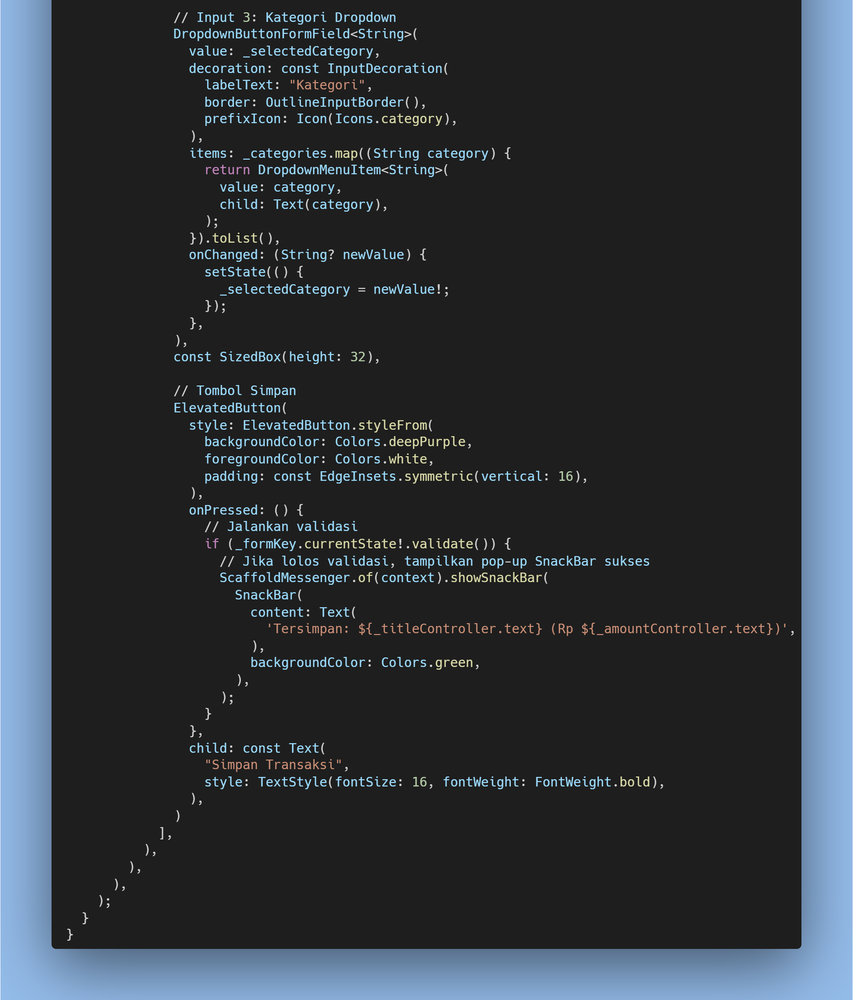
Setelah kode dijalankan, tampilan halaman Catat Transaksi Baru berhasil muncul sesuai rancangan pada modul. Terlihat kolom Judul Transaksi terisi "makan malam", kolom Nominal terisi "50.000", serta dropdown Kategori menampilkan pilihan "Makanan" dengan tema warna ungu (deepPurple) pada AppBar dan tombol Simpan Transaksi.
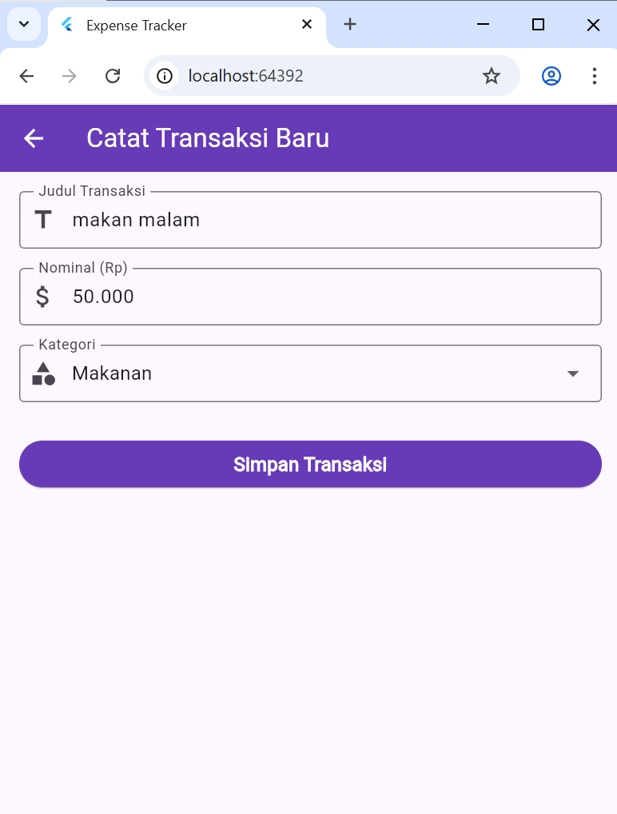
Sesuai instruksi pada modul bagian 1.5, saya menambahkan satu input baru sebelum tombol Simpan, yaitu kolom Tanggal Transaksi. Kolom ini wajib diisi dan pengisiannya dilakukan melalui fungsi showDatePicker, bukan diketik manual.
Saya menambahkan sebuah TextEditingController baru (_dateController) khusus untuk menampung tanggal yang dipilih, serta sebuah fungsi asinkron _pilihTanggal() yang memanggil showDatePicker bawaan Flutter. Hasil tanggal yang dipilih pengguna kemudian diformat secara manual menjadi bentuk DD/MM/YYYY sebelum dimasukkan ke dalam controller.
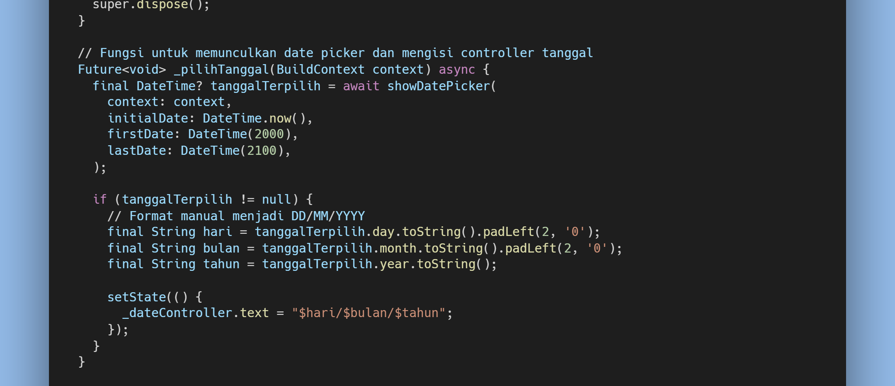
Kolom TextFormField untuk tanggal dibuat bersifat readOnly agar pengguna tidak bisa mengetik manual dan tetap harus memilih lewat kalender, baik dengan menekan tombol ikon (+) pada suffixIcon maupun dengan menyentuh (tap) area kolom itu sendiri. Validator pada kolom ini memastikan tanggal wajib diisi sebelum form dapat disimpan.
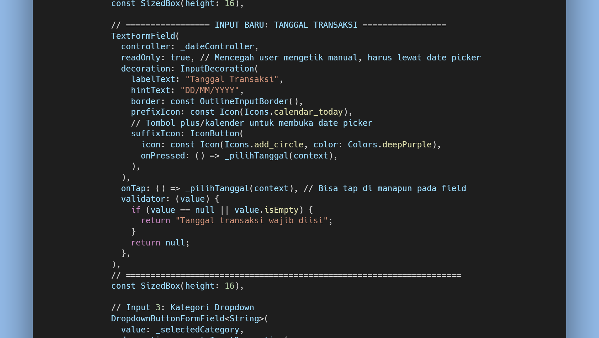
Ketika tombol (+) pada kolom Tanggal Transaksi ditekan, showDatePicker bawaan Flutter berhasil muncul dalam bentuk kalender, menampilkan bulan September 2026 dengan tanggal hari ini (25 September) tersorot berwarna ungu sebagai default pilihan.
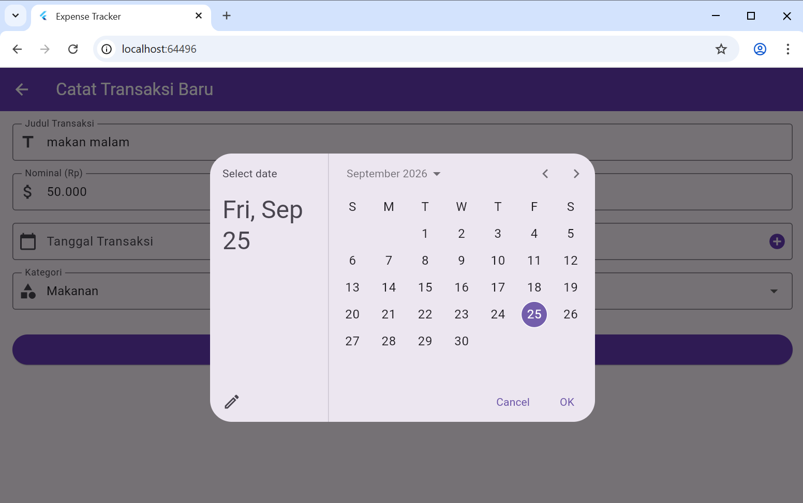
Setelah tanggal dipilih (26 September 2026) dan tombol OK ditekan, nilai tanggal otomatis terisi ke dalam kolom dengan format DD/MM/YYYY, yaitu "26/09/2026", sesuai dengan format yang diminta pada instruksi latihan.
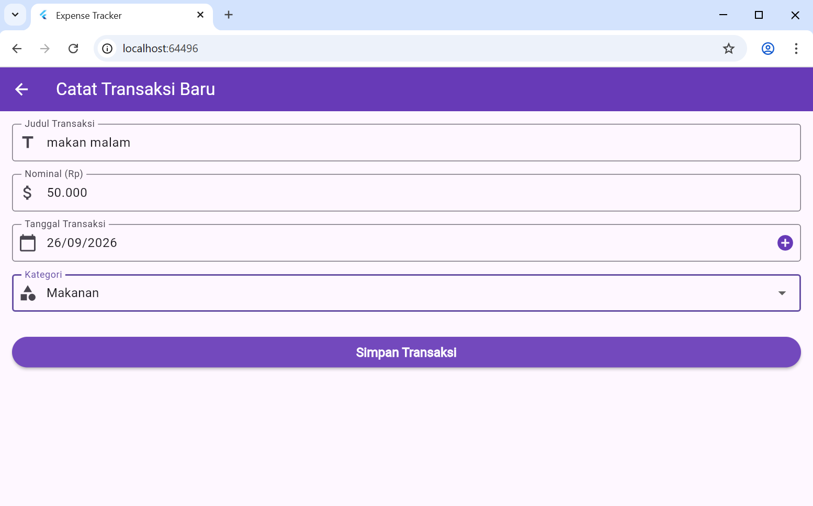
Terakhir, saat seluruh kolom (Judul, Nominal, Tanggal, dan Kategori) sudah terisi dengan benar dan tombol Simpan Transaksi ditekan, validasi berhasil dilewati oleh semua kolom sehingga muncul SnackBar hijau di bagian bawah layar bertuliskan "Tersimpan: makan malam (Rp 50000) - 26/09/2026". Hal ini membuktikan bahwa validator pada kolom tanggal yang baru ditambahkan sudah berjalan sebagaimana mestinya, karena form tidak akan lolos apabila kolom tanggal masih kosong.
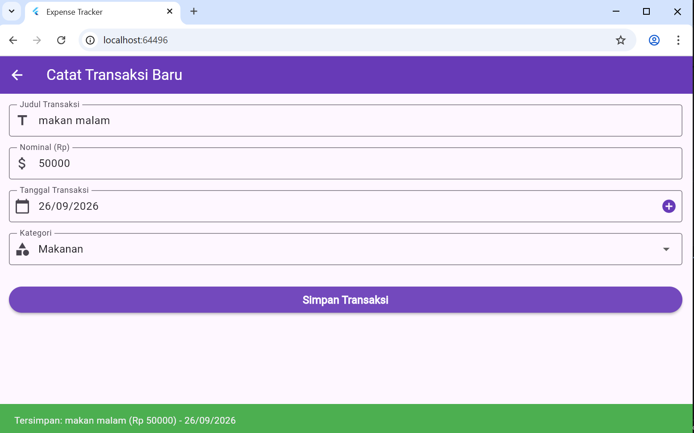
Dari hasil pengujian yang telah dilakukan, seluruh validator pada form berjalan sesuai dengan yang diharapkan. Ketika salah satu kolom seperti Judul, Nominal, atau Tanggal masih kosong, tombol Simpan Transaksi tidak akan berhasil menjalankan aksi simpan karena _formKey.currentState!.validate() akan mengembalikan nilai false. Sebaliknya, ketika seluruh kolom sudah terisi dengan benar, validasi akan lolos dan SnackBar konfirmasi berwarna hijau akan muncul.
Penambahan input Tanggal Transaksi pada bagian latihan juga menunjukkan bahwa konsep Form dan GlobalKey pada Flutter cukup fleksibel, karena kolom baru dapat ditambahkan ke dalam Form yang sama tanpa perlu mengubah logika validasi kolom-kolom yang sudah ada sebelumnya. Selain itu, penggunaan showDatePicker jauh lebih baik dibandingkan pengguna mengetik tanggal secara manual, karena format tanggal yang dihasilkan pasti konsisten dan terhindar dari kesalahan penulisan.
Sebagai catatan tambahan, file add_transaction_screen.dart yang berisi form ini juga sudah dihubungkan dengan halaman Dashboard hasil Praktikum II melalui import pada main.dart, di mana tombol Pemasukan/Pengeluaran serta sebuah FloatingActionButton "Catat Transaksi" pada Dashboard akan mengarahkan pengguna langsung menuju halaman AddTransactionScreen ini menggunakan Navigator.push.
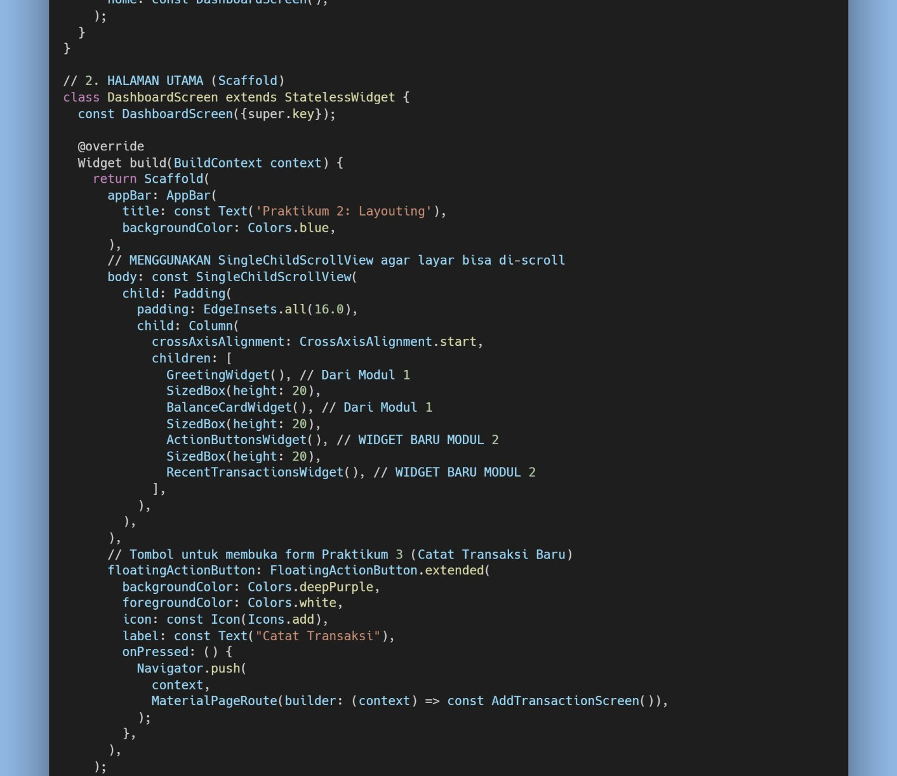
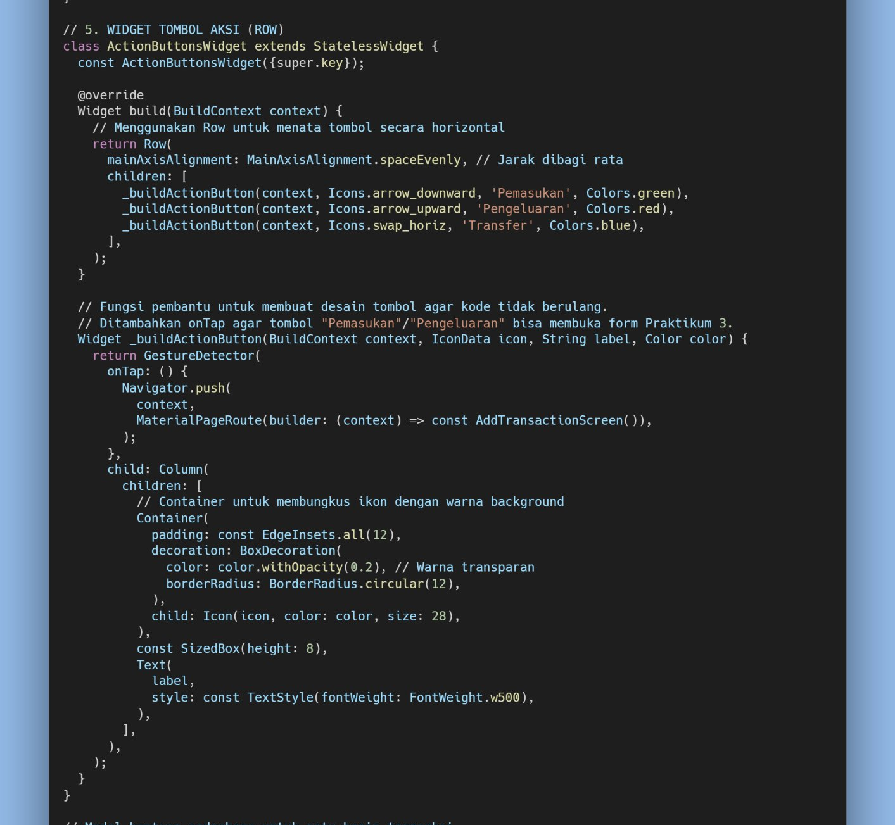
Berdasarkan praktikum yang telah dilakukan, dapat disimpulkan bahwa form input pada Flutter dapat dibangun dengan memadukan beberapa komponen utama, yaitu Form dan GlobalKey, TextFormField, serta TextEditingController sehingga beberapa input dapat divalidasi dalam satu kesatuan. Validasi berhasil diterapkan pada seluruh kolom form, yaitu Judul, Nominal, Tanggal, dan Kategori, untuk mencegah data kosong maupun format yang tidak sesuai sebelum data disimpan. Selain itu, DropdownButtonFormField berhasil digunakan untuk menyediakan pilihan kategori transaksi yang bersifat statis. Input Tanggal Transaksi juga berhasil ditambahkan menggunakan showDatePicker, lengkap dengan validasi wajib diisi, dan telah diuji coba dengan hasil yang sesuai. Melalui praktikum ini, saya menjadi lebih memahami cara membuat form input dan pentingnya validasi data dalam pengembangan aplikasi mobile agar data yang dimasukkan pengguna tetap sesuai dan dapat diproses dengan baik.